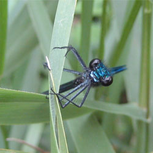
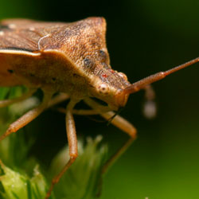
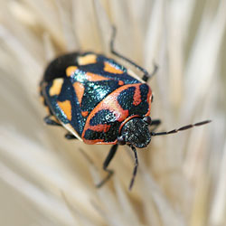

Demo 1 - Default options
Demo 2 - Custom options
- 
- 
- 
jFancyTile is a jQuery plugin to show a slideshow in a beautiful, mosaic kind of way. It's very dynamic and easy to use. Make sure you check out the article, download the source and learn how it works!
Options / use:
Make sure your HTML looks like the following:
<div id="selector">
<ul>
<li><img src="images/img01.jpg" alt="Title 01" /></li>
<li><img src="images/img02.jpg" alt="Title 02" /></li>
<!-- More images -->
</ul>
</div>
The alt attribute from each image will be used to display as the title on top.
Next, include the needed CSS and jQuery files to your HTML head:
<head> <link rel="stylesheet" type="text/css" href="css/jfancytile.css"/> <script type="text/javascript" src="js/jquery.jfancytile.js"></script> </head>
Now you're ready to use the plugin! Feel free to change the CSS file to your needs. To use the default options, simply call the plugin on the selector:
$("#selector").jfancytile();
For more customization, you can change the following input variables:
$("#selector").jfancytile({
inEasing: "swing", // Easing animation of tiles flying IN
outEasing: "swing", // Easing animation of tiles flying OUT
inSpeed: 1000, // Animation speed of tiles flying IN
outSpeed: 1000, // Animation speed of tiles flying OUT
rowCount: 8, // Total number of rows
columnCount: 13, // Total number of columns
maxTileShift: 3 // Max amount of positions a tile can shift
});
That's all there is to it!
Good things about this plugin:
- Easy to use (just include the needed CSS en JS files and change the HTML)
- Auto-fits (Takes the size of the biggest image and uses that as the container size)
Bad:
- CPU intense (loads of DOM creation and animation makes it heavy for slow computers)